Can you send me a pen because the old one is broken (2023)
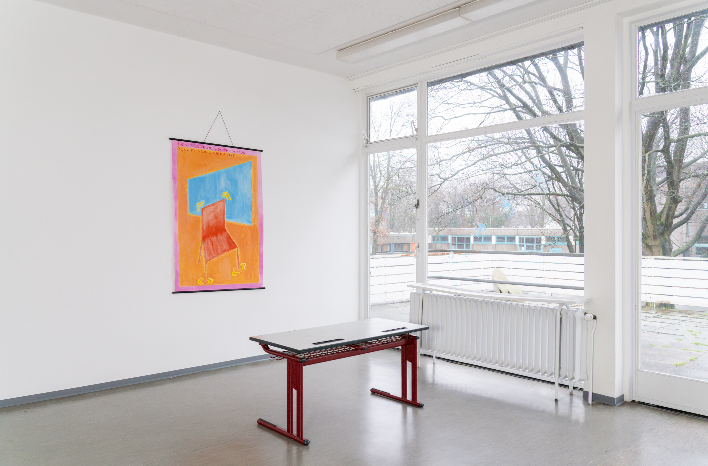
Can you send me a pen because the old one is broken responds directly to the unusual surroundings and architecture of the SkulpturenMuseum Marl. The work was specifically produced for the group exhibition „Es gibt keine Maikäfer mehr“. Situated temporarily in the premises of the Martin-Luther-King Gesamtschule in the suburbs of Marl in Germany’s Ruhrgebiet, the museum building retains its schoolish dimensions and smells. The installation consists of a heavily modified school table and a childish painting, hung like a wall chart. Inscribed with biro pen and scratched in with scissors, the table’s surface recalls the boredom and repetitiveness of time at school as well as the necessity to inscribe oneself into the environments we inhabit, however hostile. The painting, hanging above the table, depicts a red chair in quotation marks. Imprints of hands in blue finger paint are visible on the window’s surface, arranged to resemble a bird flying off thus mirroring the motif depicted on the school table.
Can you send me a pen because the old one is broken’s intention was not simply to emphasise the „schoolish“ architecture which underlies the museal space, but to make space for free association and recollection. It is a broader reckoning with the „school subconscious“, with the way in which education inscribes itself into our bodies and minds. It is also an invitation to leave traces, to think about how we are defined by our environments, but also how we might transform them.
The installation work marks the beginning of a longer term project in collaboration with students from the Martin-Luther-King Gesamtschule, in which we attempt to make a sci-fi film together. The film will be screened on the March 3rd 2024 on occasion of the exhibition’s finissage which also celebrates the release of the exhibition catalogue featuring further writing on our works.
A search for a new alphabet, beyond the one that we learnt at school — for a language that levitates, that lifts, lifts me out of my chair, out of the educational complex once and for all.
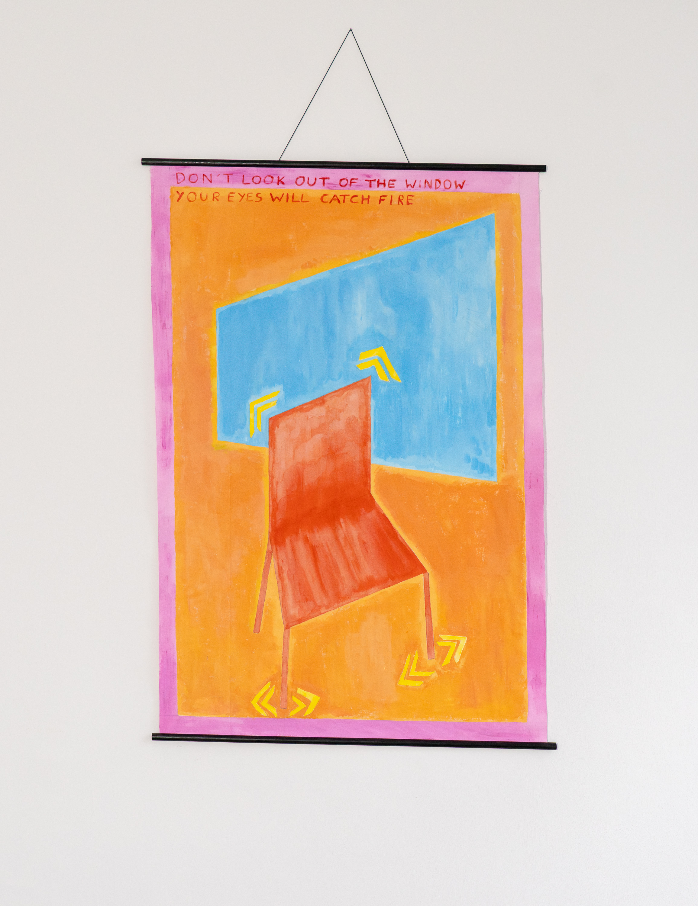
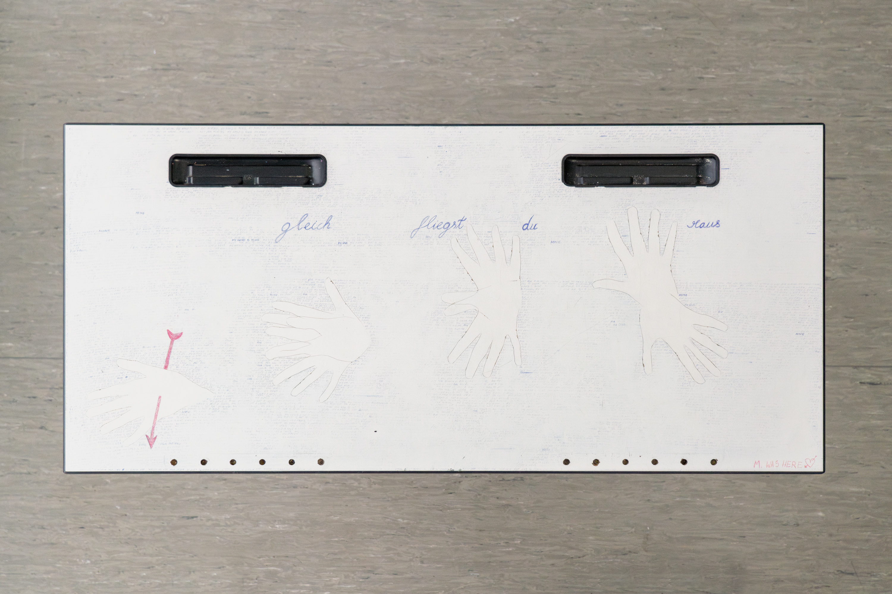
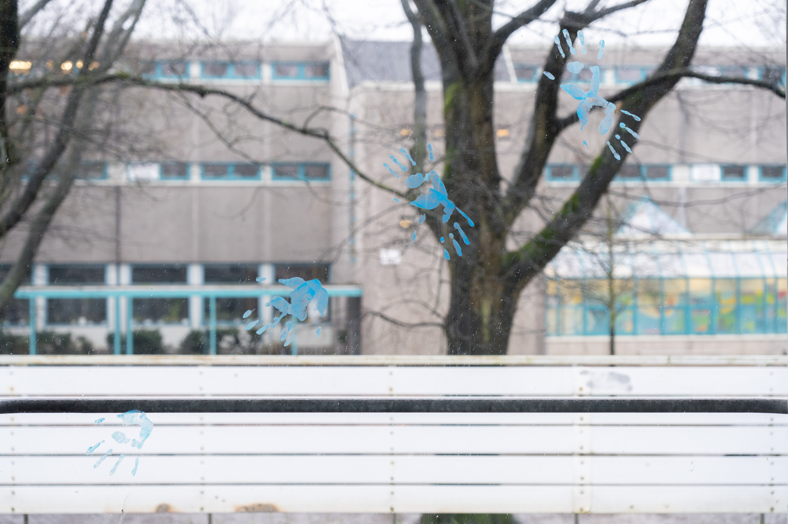
Choir of 5 human trumpets (2023)

Listen here
Choir of 5 human trumpets is a sound installation featuring 5 papier-maché spirit trumpets and the voices of my friends Ella, Dani, Ana, Kihuun and Max. First shown at the KHM Rundgang in July 2023, the trumpets were suspended from the ceiling, whispering voices emanating from each trumpet. Over time the dispersed whispers gradually evolve into a choral, howling wind. Borrowing from the tradition of early 20th century mediumship in which spirit trumpets were used to amplify the voices of the ghosts, Choir of 5 human trumpets reckons with the ghostly quality of the wind as our breath. The trumpet, a wind instrument after all, might be considered a meterological device capable of channelling the weather we carry each within us as well as producing new forms of weather. Blue strips of fabric arranged into star-like shapes on the floor complete the installation, referencing the hermetic compositions of Marie Lieb made out of ripped bedsheets during her internment at the Heidelberg Psychiatric Clinic in the early 20th century. Choir of 5 human trumpets reckons with the necessity of escaping the madness of our environments, appeals to our capacity to transform the ~weather~ through breath and song and is ultimately a search for the choral wherever it might be hiding.


 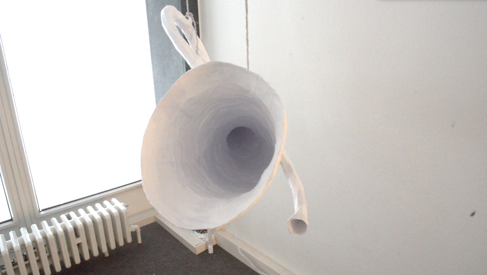
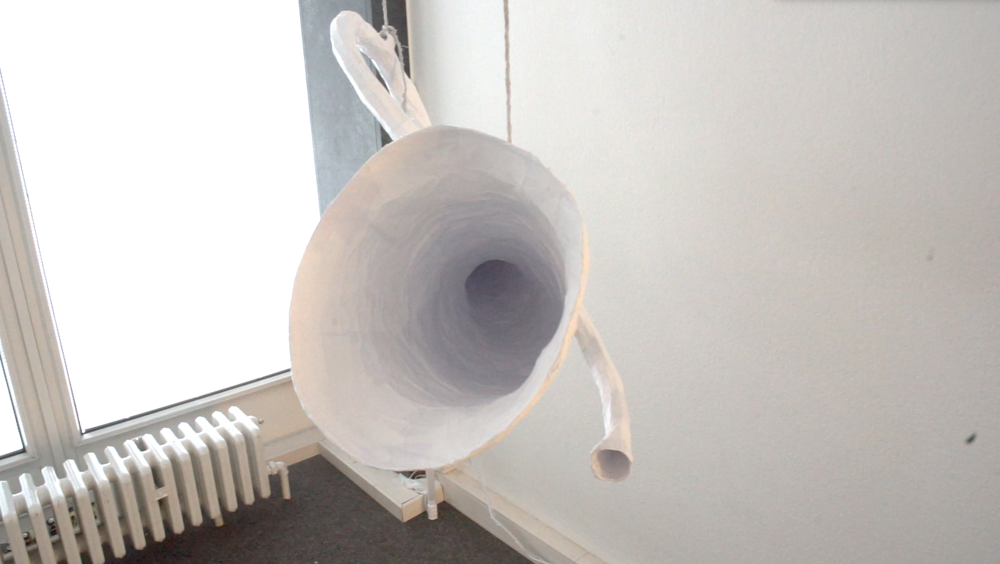
Star crossed are an artist duo working together since 2020. Their work often responds to specific occasions or environments which they wish to transform through the various means of performance such as text, sound and stage design. In their approach to stage design as well as text as means of altering spaces and creating conditions for playfulness, they seek to create unusual settings in which new language games, systems and rhythms might occur. Their previous performances and stage acts reinterpret and sample already existing forms of entertainment, pop culture and sports as a means of producing new forms of “play” and challenging the notion of “good performance” itself. Between introspection and a desire for spectacle, their works are a search for playfulness and levity, for poetic descriptions against semantic rigidity.
End Game (2023)
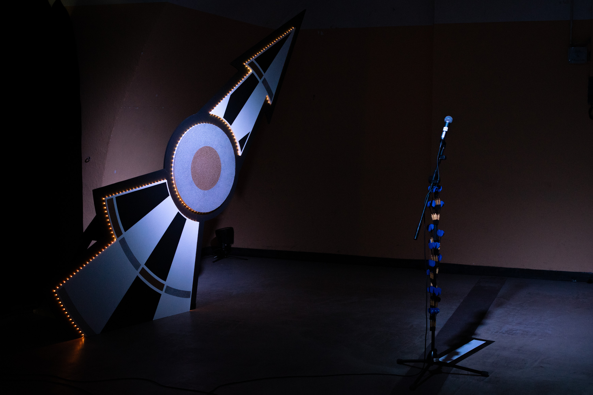
End Game is the second dart game performed by the artist duo star crossed (Max Mauro Schmid & Mathilde Hawkins). As are all games, darts is a closed system in which the rules are clear and predictable. For the game to be played, the players have to conform to its rules. While the two performers take turns throwing darts, they must come to terms with the repetitiveness and the limited prospects of the game as to where it might take them. Although they’re aiming high (for the stars), they keep finding themselves in a loop of anticipation and boredom out of which they can’t seem to get out. While they shoot and score, the two dart players correspond with each other, describing each other’s actions like sports commentators only to drift off into medidations on outer space, time and the apocalypse. Their speech, which loops and repeats, falls into rhythm with the dart game as well as into the beat of a soundscape of pulsar stars. The stage design — a large dart / dart board pointing to the sky and a small star-shaped platform —- are reminiscent of game-show aesthetics, in which contestants are trapped between the reality of boredom and the fantasy of success. While sharing a name with the absurdist play by Samuel Beckett, End Game does not settle into pessisism but instead searches for new poetic descriptions, as a means of broadening our understanding of our desires and ambitions, in a world that is narrow and cold. End Game is a reckoning with such desires and ambitions, an endless attempt to (re)direct them, into the bullseye and beyond.
End Game was first performed in October 2023 at the tenth edition of the Performance Garten, a performance festival taking place in Köln, Germany.
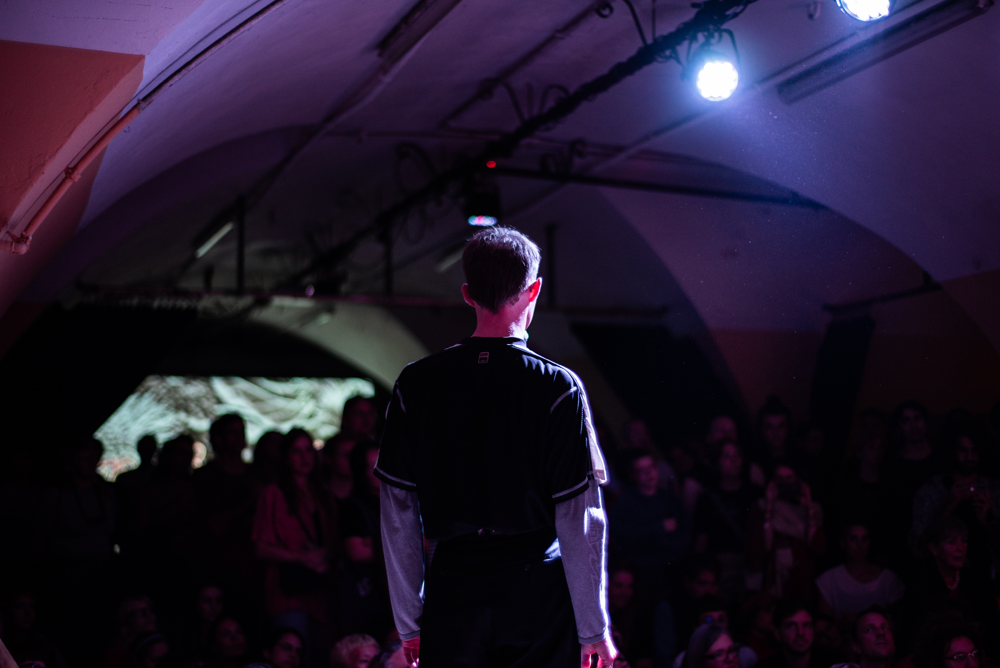 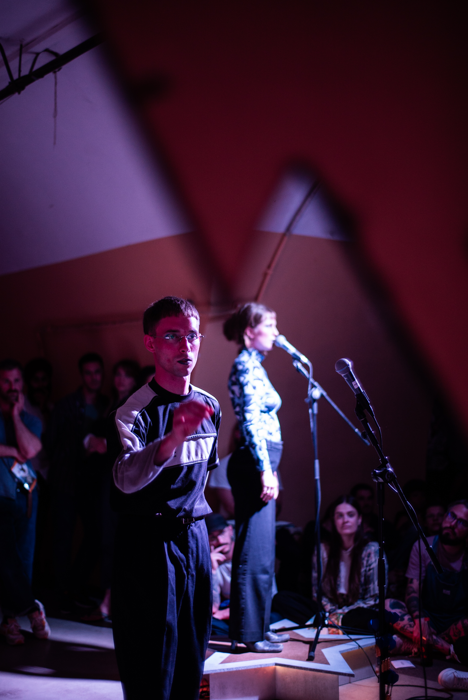 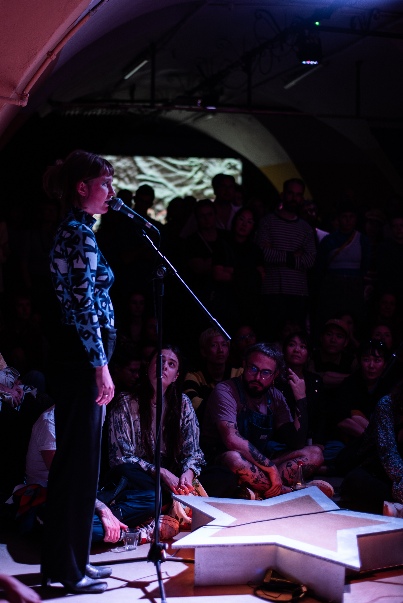
Hit and Miss (2022)

Hit and Miss is a performance and installation staging a game of darts between the two artist or dartist duo star crossed (Max Mauro Schmid & Mathilde Hawkins). Standing at either end of a platform, the two performers take turn throwing a set of three darts at the double-sided electronic dartboard hanging between them at head height. Each successful hit triggers a sound from the electronic board, which in turn triggers a sentence to appear on a projection board above them. Each projected sentence is read out in an instructive, didactic manner by the players before each throw. Each round of darts (three shots) is electronically linked to a syllogistic sequence (three sentences) whose logical truth seems at first indisputable. The progression of the syllogistic text depends entirely on whether the players manage to hit the dartboard. Reminiscent of a „drill“ or competitive sports training, the dictums speak of themes such as the importance of clear goals, of discipline and consistency, of competition and victory. Yet the man-machine is threatened by the possibility of the players missing the mark. As the performance progresses towards its end, the didactic text drifts into more personal, almost romantic questions, resulting in the falling apart of the syllogistic pattern. Addressing the relational aspects of the performative situation, the performers ask each other: How can I ever be sure that the message (the arrow) I throw at you really reaches you? Are we playing together or are we playing against each other?
Hit and Miss was first performed at the Academy of Media Arts Rundgang in July 2022.


 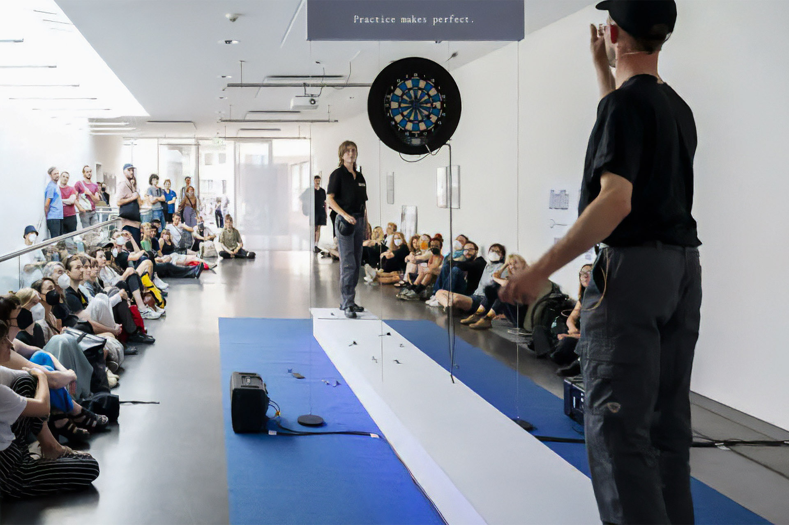
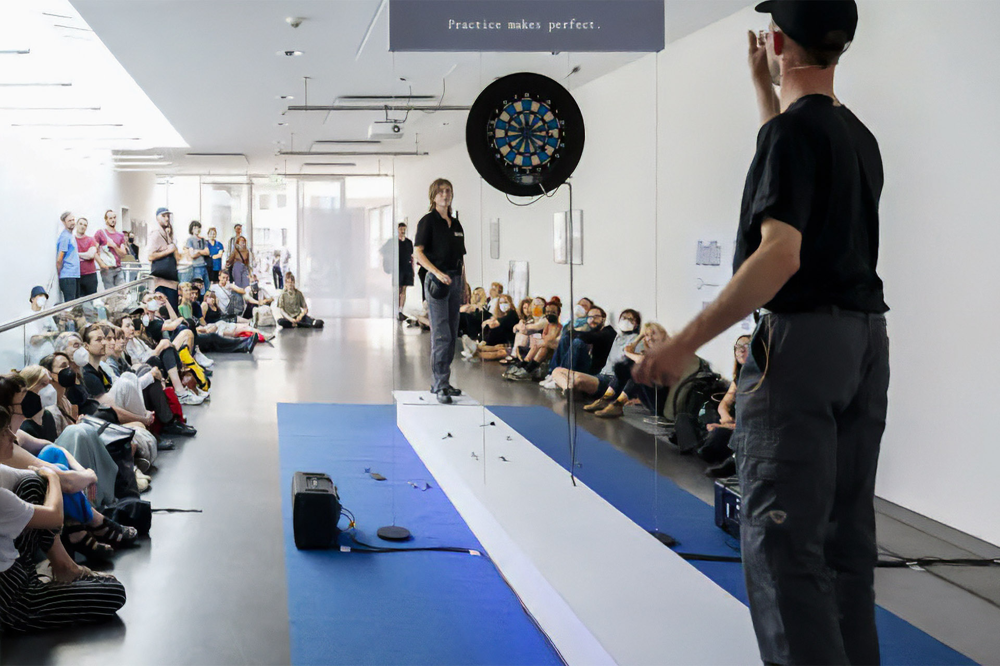
Mid-Air (2021)
Mid-Air (A Velodrama) was a one-night-only stadium event which took place in Cologne’s Albert-Richter-Velodrome on the 21st of August 2021.
The on-flight crew featured a choir, a group of cyclists, a group of birdwatchers, two pilots and live-music by AIRCHINA. From the epicentre of the oval stadium, they perform a collective flight maneouvre in an attempt to reinvent their desires for aerodynamic transportation.
Mid-Air was a moment of suspended disbelief, a moment of celebration and mourning. A farewell also to the Cologne-Müngersdorf velodrome, which shortly after the performance began its reconstruction into a “multi-functional” sports arena — closing its open roof, making it in future inaccessible to the sky.
Backed by the voices of the two pilots Suse Itzel and Vanja Smiljanic, the cyclists assume changing formations, drawing from the repertoire of velodrome cycling, resembling flocks of migratory birds. While they orbit around the tracks, the audience and „bird watchers“ are gathered at the centre of the stadium around the „control tower“, the gravitational centrepoint of the piece. The birdwatchers observe the surrounding events, moving in and out of formation. Accompanied by the live soundtrack of AIRCHINA, the two pilots report on the desires and hardships of flying, on turbulence, crashes and the envy of all that has wings. Interruptions in their monologue are marked by the choir’s performance of the recurring song: I’m leaving on a Jet Plane (I don’t know when I’ll be back again.)
Full video documentation of the performance available upon request.


Pilots: Suse Itzel, Vanja Smiljanić. Birdwatchers: Aro Han, Jinwoo Jung, Dani Kim, Christi Knak Tschaikowskaja, Andreas Niegl, Valeria Oggioni. Cyclists: Oliver Becker, Detlef Bendermacher, Thomas Henscheid, Rauthgundis Höschen, Jochen Kunze, Tyler Swingle. Choir: Martin Bartmann, Ingolf Barwig, Mathis Bauer, Mirjam Berg, Kevin Bischof, Charly Bossong, Meike kleine Brörmann, Wiebke Dumpe, Agnes Etzkorn, Susanne Fricke, Annika Gehring, Anke Gläser, Johanna Grimm, Angela Grimm, Lennart Heine, Almut Hoberg, Gesine Hustedt, Anne Janser, Isabel Joswig, Caren Kraupner, Sarah Lind, Pushpa Linke, Severin Millen, Marta Ramos Guisande, Julia Röwenstrunk, Leonie Schulz, Simon Waskow, Rudi Wiesner. Choir Master: Niklas Genschel. Assistant Choir Master: Felix Läpple. Original Soundtrack: AIRCHINA (Nikolai Szymanski). Singer: Andreas Niegl. Stage Design: Thomas Lambertz. Stage Design Assistance: Manfred Lambertz, Johanna Pigors, Nathan Schönewolf, Lukas Vögele. Costumes: Ai Kobayashi. Choreography: Julia König. Sound: Jiyun Park. Graphic Design: Ishar Hawkins. Documentation: Dora Cohnen, Johann Husser, Nikolai Meierjohann, Carmen Rivadeneira, Marja Vormann, Adrian Witzel. Cabin Crew: Matthew Hawkins, Mikkel Haynes, Levin Krasel, Jingyuan Luo, Dilara Raika, Julia Kim Walter. Thanks to: Fabian Anger, Aristophanes, Timothy Bidwell, Fritz Billstein, Juliane Blum, Petra Clemens, Phil Collins, Bidisha Das, Lilian Haberer, Sophie Hawkins, Sophia Herber, Uwe Huth, Roland Kärmer, Mischa Kuball, Ella Kühn, Joachim Kühn, Elisa Kühnl, Constantin Leonhard, Sepp Liebisch, Heiner Müller, Martin Paret, Cajus Plinius Secundus, David Schult, Jascha Sommer, Jutta Strauss, Claudia Trekel, Anh Chi Trinh, Karen Zimmermann, Tobias Yves Zintel. A Piece by: Mathilde Hawkins & Max Mauro Schmid.
Mensa Gallery (2019-)
Mensa Gallery is a para-fictional gallery run by Andreas Niegl, Jacob Höfle and Mathilde Hawkins. Founded in 2019 in the canteen (in German: „Mensa“) of the Academy of Media Arts, the Mensa Gallery has been a format for self-organised talks, workshops, exhibitions, disruption and a barrel of laughs. Find out everything about Mensa Gallery’s previous exhibitions, talks and other events here
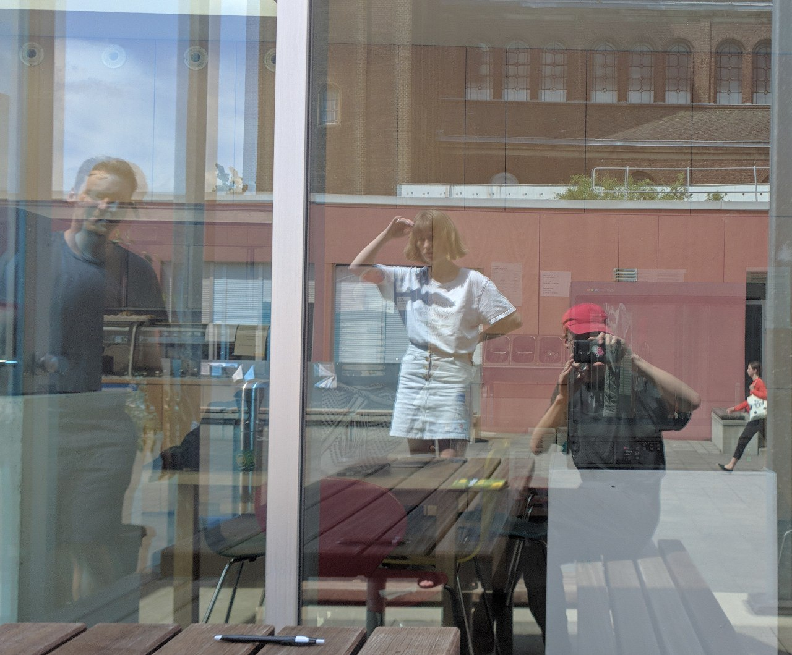
ongoing
[photo bluna keller- will send soon]
Bluna Keller is a community of artists and friends working across different mediums. Since 2020 we share a space in Nippes, Köln which which we use to work on our projects. As we have grown as a community, it has become a place of informal coming together and occasional public events. This year we are working on opening the space to a larger community of friends and artists and welcome suggestions for events such as workshops, screenings, reading groups, concerts or rehearsals. Get in touch with us: bluna.cologne@gmail.com
Erzbergerplatz 9., 50733, Köln
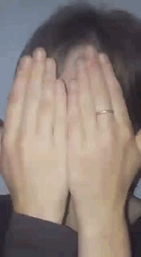
Over the past years I have organised informal seminars at the Bluna Keller, gathering friends and friends of friends to experiment with different forms of performance, play, sharing of knowledge. Recent seminars have been scenes with beans— a seminar about slapstick, the transgressive potential of physical comedy, the problems of performing idiocy, the language of the body in opposition to the rational ordering of the world, nonsense, silly walks and of course the question of Mr Bean as subversive or subservient character ? & chasing your demons out the door with a spoon co-organised with Max and Ana in which we attempt to expand an understanding of our emotional lives beyond “mental health” and limited psychiatric categories, beyond diagnosis and self-representation, towards a collective understanding of suffering/joy and therapeutical processes. Keep your ears peeled for the next one! <3
Mathilde Hawkins (*1999 in London, England) is a writer/storyteller, performer and visual artist who works site-specifically and collaboratively. Through her performances, installations and workshops she focuses on creating collective experiences and environments of free association and play. She lives and works in Cologne, where she currently studies at the Academy of Media Arts.
I’d love to hear from you about possible collaborations or conversations! Get in touch: hawkinsmathilde@gmail.com